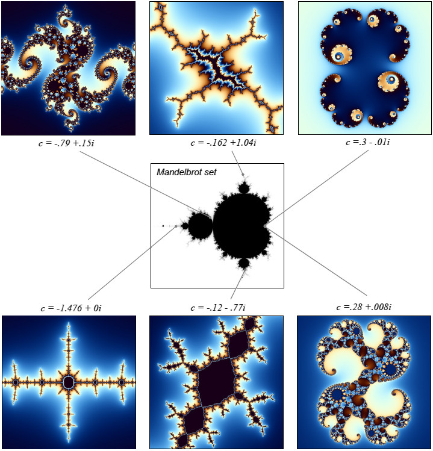
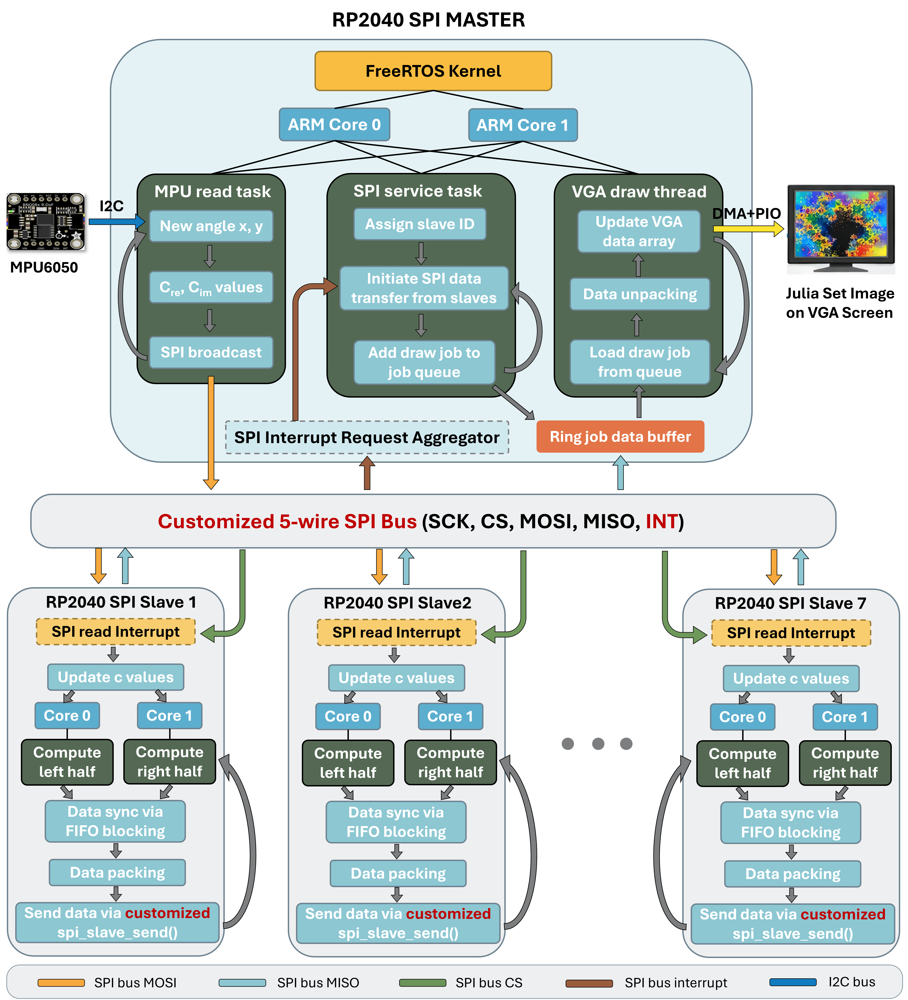
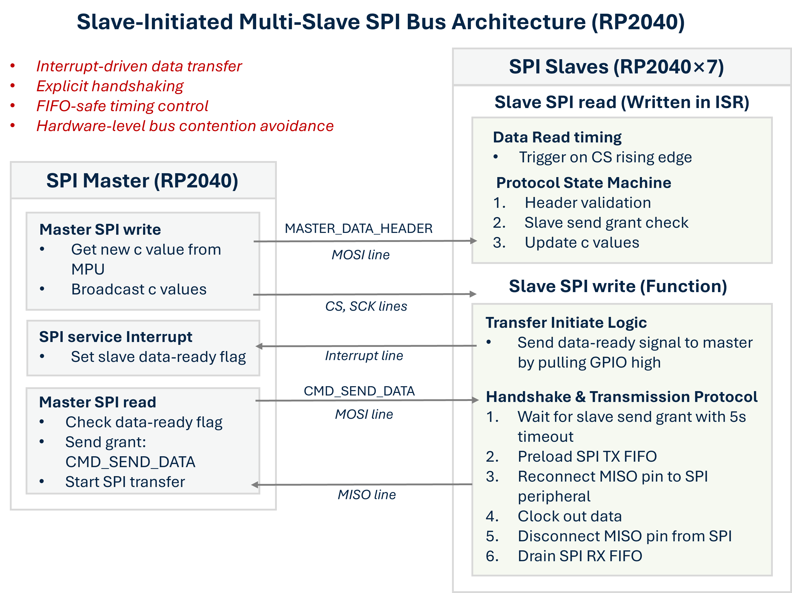
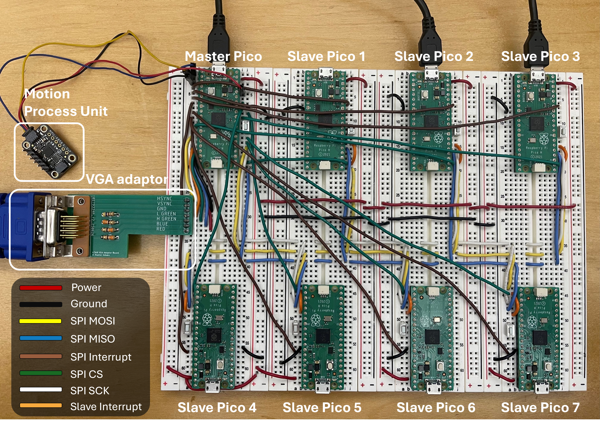
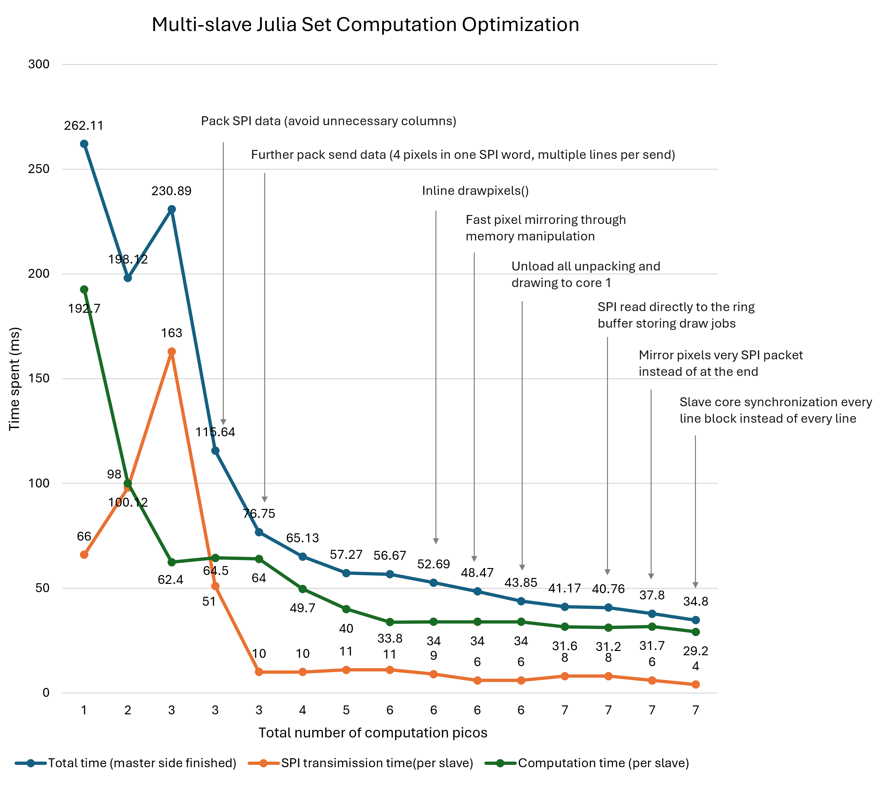
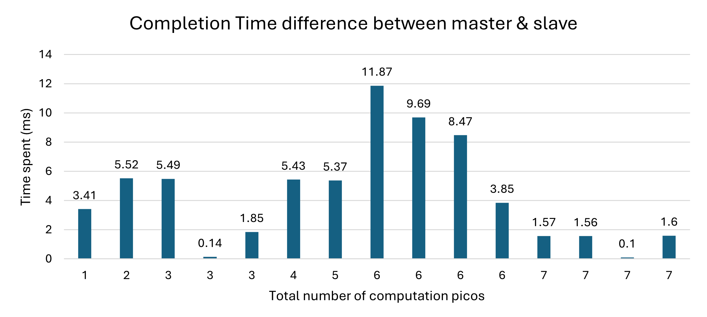
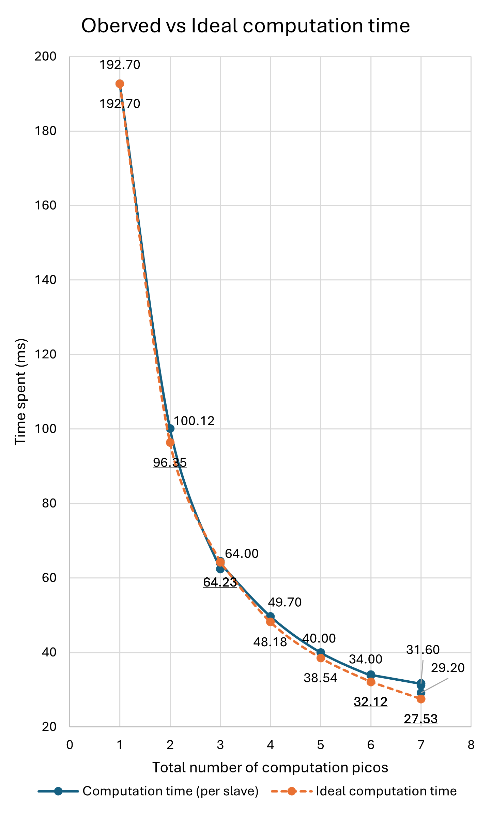
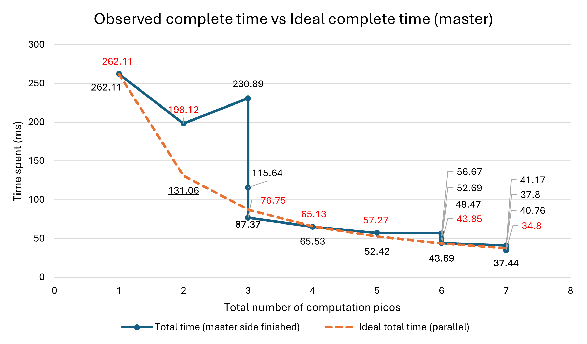

Introduction
“Real-Time, Interactive Julia Set Rendering Running on Dual-Core RTOS Leveraging Parallel Computing Clusters of RP2040s with a Custom Interrupt-Driven, Multi-Slave SPI Communication Protocol”
Project overview (TL;DR)
This project implements a real-time, interactive Julia set visualization system using a distributed cluster of RP2040 microcontrollers. A single RP2040 master handles VGA signal generation, frame composition, and user input, while 7 RP2040-based slave nodes form a parallel compute fabric, each leveraging both cores to compute disjoint regions of the fractal. In total, 14 compute cores operate concurrently. To scale computation and communication efficiently, the system introduces a custom SPI protocol featuring slave-initiated, interrupt-driven transfers, explicit handshaking, and dynamic MISO tri-stating to prevent bus contention. On the master, FreeRTOS SMP (symmetric mulitprocessing) coordinates SPI servicing, rendering, and sensor input across both cores, enabling deterministic frame updates and smooth real-time interaction. The result is a tightly integrated system that combines parallel computing, RTOS scheduling, and low-level protocol design to push interactive graphics performance on microcontroller-class hardware.
Live Demonstration
The demo video showcases real-time interaction with the Julia set using an MPU6050 inertial sensor. Rotating the device along the X and Y axes continuously updates the complex parameter \(c = c_{re} + i·c_{im}\), causing the fractal structure to morph smoothly in real time. Each motion-triggered update forces a full parallel recomputation across all slave nodes, highlighting the system’s low-latency communication pipeline, stable frame timing, and responsiveness under dynamic workloads.
Julia Fractals
A Julia set is a fractal generated by iterating a complex-valued function of the form: \[ z_{n+1} = z_n^2 + c \]
where \(z\) and \(c\) are complex numbers. For each pixel on the screen, its cooridinate on screen \((x,y)\) is corresponded to a cooridinate (\(z_0\) = x+ y*i) in the complex plane. The system repeatedly applies the equation and tracks whether the sequence diverges or remains bounded. The number of iterations before divergence (\(\|z\| \geq 2\)) determines the pixel’s color.

Unlike the Mandelbrot set (which varies \(c\)), a Julia set fixes \(c\) and visualizes how different starting values \(z_0\) evolve. Small changes in \(c\) can dramatically alter the global structure, making Julia sets highly sensitive and visually rich—an ideal target for real-time, interactive exploration.
High Level Design
This project implements a real-time Julia set visualization system using a distributed cluster of RP2040 microcontrollers. A single RP2040 operates as the master, responsible for VGA signal generation, SPI data receive and service, MPU sensor interaction, and system coordination, while seven RP2040-based slave nodes form a parallel computing cluster. Each slave exploits both cores to compute disjoint columns of the Julia set in parallel, yielding 14 concurrent compute cores dedicated exclusively to fractal generation.

At the system level, computation and rendering are decoupled through a customized multi-slave SPI bus augmented with a dedicated interrupt line per slave. Rather than master polling or enforcing rigid transfer schedules, slaves independently signal completion of computation via interrupts and let master initate data transfer. These data-ready signals are aggregated on the master side and serviced by a dedicated SPI service task, enabling slave-initiated, interrupt-driven data transfers. Explicit handshaking commands and dynamic MISO tri-stating ensure that only the active slave RP2040 drives the SPI bus at any time, eliminating contention and allowing the bus to scale safely across multiple active devices.
On the master, FreeRTOS SMP orchestrates task execution across both cores. A high-priority task (MPU read) continuously reads inertial data from an MPU6050 at certain interval, and broadcasts updated Julia c values to all slaves spontaneously via SPI bus. A mid-priority task (SPI service) responds to aggregated slave interrupts, retrieves computed pixel blocks via SPI bus, and enqueues them into a ring-based draw job buffer. A lower-priority task asynchronously (VGA draw) consumes these draw jobs by unpacking pixel data and updating the VGA frame buffer. The color data in VGA frame buffer was then translated to VGA screen pattern with a DMA + PIO based VGA driver. This task-level separation enables SPI communication, sensor input, and rendering to proceed concurrently with minimal blocking, maintaining deterministic frame timing and smooth real-time interaction.
Program Design
Part I. Slave-Initiated Multi-Slave SPI Bus
Design Challenges
Designing a scalable, real-time communication layer between a single SPI master and multiple active Raspberry Pi slaves exposed several fundamental limitations of conventional SPI usage and the Raspberry Pi C-SDK. These challenges motivated a complete redesign of the SPI protocol.
Key challenges include:
Limited SPI slave support in the Raspberry Pi C-SDK
The SDK’s SPI APIs are primarily designed for master operation and assume control over CS and SCK. As a result:spi_write()cannot be safely used by a slave.spi_read()must be tightly coupled to the master’sspi_write().- There is no built-in support for multi-slave Raspberry Pi coordination.
Lack of slave-initiated communication
Standard SPI is strictly master-driven. Slaves cannot signal read-ready or request transfers, forcing inefficient polling or rigid scheduling on SPI master — both unacceptable for real-time parallel workloads.Bus contention on shared SPI MISO lines
RP2040 SPI peripheral continues to drive MISO low even when peripheral is idle; Empirical tests show C-SDK’s slave output disable (SOD) bit does not tri-state the MISO pin. So with multiple slaves on a shared MISO line, idle devices cause bus contention and corrupt active transfers.FIFO timing and synchronization hazards
SPI is sensitive to TX/RX FIFO timing. For example, if the master clocks data before the slave has preloaded the FIFO, the master reads invalid or stale data. These hazards are amplified in half-duplex transmission and interrupt-driven system where things occur asynchronously.Need for asynchronous data reception
Slaves must be able to receive parameter updates (e.g., Julia set constants) at any time—without blocking computation or requiring explicit polling loops.
These constraints make a naïve SPI-based multi-slave architecture unreliable and non-scalable this application.
Protocol Overview
To address these challenges, this project implements a customized, slave-initiated, multi-slave SPI protocol, illustrated in the diagram below, that redefines the traditional SPI control flow while preserving hardware compatibility.
At a high level, the design augments the standard 4-wire SPI interface with an additional per-slave interrupt (INT) line, forming a 5-wire SPI bus:
SCK, CS, MOSI, MISO, INT.
- Slave-initiated data transfer (INT + MISO path)
- After completing computation for a block of image rows, a slave asserts its interrupt line, signaling data readiness.
- The master aggregates these interrupts from mulitple slaves and schedules servicing via a dedicated SPI service task.
- When master is ready to perform SPI servicing to a particular slave, the master sends an explicit send-grant command to that slave. Then starts SPI tramission.
- Explicit handshake and FIFO-safe timing control
- Slave will first pull the interrupt line high to indicate data ready for transfer. But it only start the transfer sequence (shown below) after receiving the send-grant (
CMD_SEND_DATA) from master.- Preloads its SPI TX FIFO with the first data word to help with timing control, so that master won’t clock meaningless data.
- Dynamically reconnects its MISO pin to the SPI peripheral by
gpio_set_function(). - Waits for CS assertion before clocking out data.
- Streams packed pixel data to the master.
- Disconnects MISO (set gpio function to
GPIO_FUNC_NULL) and drains RX FIFO after completion.
- Slave will first pull the interrupt line high to indicate data ready for transfer. But it only start the transfer sequence (shown below) after receiving the send-grant (
- Hardware-level contention avoidance
- When idle, each slave places its MISO pin in high-impedance (
GPIO_FUNC_NULL) mode. - Only the actively granted slave drives MISO, guaranteeing contention-free operation even with multiple connected slaves.
- When idle, each slave places its MISO pin in high-impedance (
- Asynchronous master-to-slave updates (MOSI path)
- The master broadcasts updated Julia parameters using a fixed data header (
MASTER_DATA_HEADER). - On each slave, SPI RX is handled inside an interrupt service routine, triggered on the CS rising edge.
- The ISR validates the header and either:
- Updates the complex parameter \(c\), or
- Interprets as a send-grant command.
- Slave can now also receive data anytime the master sends it without calling
spi_read_blocking(), enabling real-time data update.
- The master broadcasts updated Julia parameters using a fixed data header (

Implementation Notes
- The slave SPI receive path is implemented in an ISR to capture incoming data without blocking computation.
- The send-grant handshake ensures the master is fully prepared to clock data before the slave writes to its TX FIFO.
- Timeouts and FIFO resets are used to recover safely from stalled or missed transfers.
- The protocol operates in a half-duplex, message-oriented mode, rather than conventional full-duplex SPI framing, enabling deterministic timing and clear ownership of the bus.
Completely reconstructed spi_write() C-SDK function designed for RP2040 slaves is referenced below:
// Modified C-SDK SPI function for slave able to initate data transfer to master with timeout
int __not_in_flash_func(spi_slave_write16_blocking)(spi_inst_t *spi, const uint16_t *src, size_t len) {
invalid_params_if(HARDWARE_SPI, 0 > (int)len);
size_t sent = 0;
gpio_put(SIGNAL_PIN, 1); // Signal master that slave has data and is ready to send
// Wait until master grants permission to start data transfer with timeout
absolute_time_t timeout_time = make_timeout_time_ms(5000); // 5s timeout
while(!spi_tx_grant) {
if (absolute_time_diff_us(get_absolute_time(), timeout_time) <= 0) {
// Timeout occurred - master didn't respond
gpio_put(SIGNAL_PIN, 0); // Clear interrupt signal
spi_hardware_reset(spi); // Reset FIFOs to clear any staled data in TX FIFO
return (int)-1; // Return error code to indicate timeout
}
tight_loop_contents();
}
spi_tx_grant = false; // Clear grant flag for next transfer
gpio_put(SIGNAL_PIN, 0); // Clear data ready signal
gpio_set_function(PIN_MISO, GPIO_FUNC_SPI); // Reconnect MISO pin to SPI peripheral to enable TX from slave to master
// Preload first data word to TX FIFO to help with FIFO timing
// Reason: After CS/interrupt pin goes low, master start clocking out data a little (one data cycle) quicker
// than slave exit the while loop and move ahead to the first write, so this preload compensate that
spi_get_hw(spi)->dr = (uint32_t)src[sent++];
// CS still high, waiting for master to start clocking
while(gpio_get(INTERRUPT_PIN)) {
tight_loop_contents();
}
// Keep sending data to master until all data is sent
while(sent < len) {
if (spi_is_writable(spi)) {
spi_get_hw(spi)->dr = (uint32_t)src[sent++];
}
}
// Wait until SPI is not busy anymore to ensure all data goes into slave RX FIFO
// This is needed since when slave finishes sending data, master may still be clocking out the last few words in slave's TX FIFO
while(spi_is_busy(spi)) {
tight_loop_contents();
};
// Disconnect MISO pin from SPI peripheral again to avoid bus contention
gpio_set_function(PIN_MISO, GPIO_FUNC_NULL);
gpio_set_dir(PIN_MISO, GPIO_IN);
gpio_disable_pulls(PIN_MISO);
// Drain RX FIFO dummy data received after transfer finishes
while (spi_is_readable(spi)) {
(void)spi_get_hw(spi)->dr;
}
// Don't leave overrun flag set
spi_get_hw(spi)->icr = SPI_SSPICR_RORIC_BITS;
return (int)len;
}Part II. Dual-Core FreeRTOS System Design
The RP2040 master employs FreeRTOS SMP to coordinate real-time sensor input, SPI communication, and VGA rendering across both cores. Rather than relying on a single-threaded control loop, the system is decomposed into multiple cooperating tasks with carefully chosen priorities and execution roles. This design enables sensing, communication, and rendering to proceed concurrently while maintaining deterministic timing behavior.
Task Decomposition
The master firmware is structured around three primary FreeRTOS tasks, each responsible for a distinct subsystem:
MPU Read Task (High Priority)
This task continuously samples inertial data from the MPU6050 at a pre-defined rate and maps device orientation (angle x, y) to the Julia set parameter \(c = c_{re} + i·c_{im}\). Updated parameters are broadcast to all slave nodes via SPI, forcing a full recomputation of the fractal. High priority ensures low-latency response to user motion and stable interactive behavior.SPI Service Task (Medium Priority)
This task manages all SPI communication with the slave cluster. Slave-generated GPIO interrupts are captured by a lightweight ISR and forwarded to this task using bitmask-based task notifications. The SPI service task retrieves computed pixel blocks from requesting slaves and enqueues them into a shared draw-job buffer for asynchronous rendering.VGA Draw Task (Low Priority)
This task is responsible for unpacking received pixel data, updating the VGA frame buffer, and mirroring the computed upper half of the image to the lower half. By operating at a lower priority, rendering never blocks sensor updates or SPI communication, allowing new color data to be updated promptly.
ISR-to-Task Communication Model
All slave interrupt signals are handled by a minimal GPIO ISR whose sole responsibility is to record which slave has requested service. The ISR does not perform SPI operations or modify shared state directly. Instead, it forwards a bitmask notification to the SPI service task.
This approach ensures:
- Bounded ISR execution time (as short as possible)
- No SPI access from interrupt context
- Clean separation between interrupt events and SPI tranmission handling
void spi_slave_writeReq_irq(uint gpio, uint32_t events) {
BaseType_t xHigherPriorityTaskWoken = pdFALSE;
uint32_t slaveRequestBitMask = 0;
switch (gpio) {
case MASTER_IRQ_1:
slaveRequestBitMask = (1u << 0);
break;
case MASTER_IRQ_2:
slaveRequestBitMask = (1u << 1);
break;
case MASTER_IRQ_3:
slaveRequestBitMask = (1u << 2);
break;
case MASTER_IRQ_4:
slaveRequestBitMask = (1u << 3);
break;
case MASTER_IRQ_5:
slaveRequestBitMask = (1u << 4);
break;
case MASTER_IRQ_6:
slaveRequestBitMask = (1u << 5);
break;
case MASTER_IRQ_7:
slaveRequestBitMask = (1u << 6);
break;
}
xTaskNotifyFromISR(spiTaskHandle, slaveRequestBitMask, eSetBits, &xHigherPriorityTaskWoken);
portYIELD_FROM_ISR(xHigherPriorityTaskWoken);
}Job Queue and Flow Control
To decouple SPI throughput from rendering speed, received pixel blocks are placed into a ring-based draw job queue. The SPI service task acts as a producer, while the VGA draw task acts as a consumer. This buffer is protected by counting semaphores, preventing buffer overflow and uncontrolled memory growth.
This producer–consumer structure allows SPI transfers and VGA rendering to progress independently while preserving system stability and data integrity under varying workloads.
// Globally:
static SemaphoreHandle_t jobItems = NULL;
// Inside main():
jobItems = xSemaphoreCreateCounting(JOB_QUEUE_LENGTH, 0);
// Inside VGA_draw task:
// If there is a job in the queue, process it
xSemaphoreTake(jobItems, portMAX_DELAY);
xSemaphoreTake(queueMutex, portMAX_DELAY);
DrawJob *job = &jobQueue[job_head]; // Save current job's job_head
job_head = (job_head + 1) % JOB_QUEUE_LENGTH; // Move job_head to next job
xSemaphoreGive(queueMutex);
draw_packed_pixels(job->data, job->line_base, job->slaveID);
draw_times_text++;
// Release one free space after current draw job is processed
xSemaphoreGive(jobSpaces);Dual-Core Execution and Task Affinity
Core affinity configuration (pin mpu task and spi task to core 0, vga task to core 1) is used as a concurrency optimization strategy during testing in bare-metal environment. However, after testing, the system remains smooth correct without core pinning for dual-core SMP situation, where scheduler assigns which task goes to which core according to the execution status of the task.
// (Optional) Pin spi and mpu task to core 0, draw task tp core 1 (better pipelining when tested under bare-metal environment)
UBaseType_t core0Mask = (1U << 0);
UBaseType_t core1Mask = (1U << 1);
vTaskCoreAffinitySet(spiTaskHandle, core0Mask);
vTaskCoreAffinitySet(mpuTaskHandle, core0Mask);
vTaskCoreAffinitySet(drawTaskHandle, core1Mask);Hardware Design
The complete hardware setup of the system is shown below, illustrating the physical realization of the master–slave compute cluster, customized SPI bus, and peripheral interfaces. The design consists of one RP2040 master and seven RP2040 slave boards, all mounted on solderless breadboards and powered independently via USB. Despite the prototype form factor, the wiring and signal topology closely mirror a scalable embedded system backplane.

The master Pico is located at the top-left of the assembly and serves as the central controller. It interfaces with two external peripherals: an MPU6050 inertial measurement unit (used for real-time interaction) and a VGA adapter board that converts GPIO signals into analog RGB, HSYNC, and VSYNC outputs for display. These peripherals are intentionally kept close to the master to minimize signal routing complexity and timing skew.
All seven slave Picos are connected to the master through a shared SPI bus, consisting of common MOSI, MISO, and SCK lines, along with individual chip-select (CS) and interrupt lines per slave. This wiring implements the customized 5-wire SPI architecture (SCK, CS, MOSI, MISO, INT) described in the Program Design section. The use of per-slave interrupt lines enables slaves to asynchronously signal data readiness without polling, while individual CS lines allow precise transaction control.
Color-coded wiring is used throughout the assembly to improve readability and debugging: power and ground rails are clearly separated, SPI signals are grouped by function, and interrupt lines are visually distinct. This organization proved essential during development and validation of the multi-slave SPI protocol, where signal integrity and timing relationships were critical.
Performance Optimizations (Bare-Metal Environment)
Speed optimization is performed under bare-metal condition prior to the integration of RTOS for better visualization of performance change. The performance is measured by total time needed to complete the computation + data transfer + pixel drawing of one julia set frame. The c values choosen for this particular julia set frame is \(C_{re} = -0.79,C_{im} = 0.15\).
Overview
The major optimizations fall into three complementary categories:
Algorithmic Optimizations
- Exploit vertical symmetry of the Julia set by computing only the upper half of the screen and mirroring the result.
- Encode pixel values using a highly packed SPI format, transmitting 4 pixel data (4-bit char) per SPI word (16-bit).
- Avoid transmitting unnecessary columns over SPI.
Data Transfer & Memory Optimizations
- Overclock ARM cortex M0+ from 125MHz to 250MHz on computional picos.
- Batch multiple pixel lines into a single SPI transfer to amortize protocol overhead.
- Perform pixel unpacking and mirroring using direct memory manipulation instead of per-pixel drawing calls.
- Stream SPI data directly into a ring buffer, eliminating intermediate copies.
Concurrency Optimizations
- Slaves compute interleaved pixel columns on the screen. Due to the assymetric nature of Julia set along x axis, this arrangement better averages workload between slaves. Avoiding performance bottleneck caused by the slowest slave.
- On each slave, use both cores to compute in parallel, synchronizing data between two cores only at pixel line block boundaries to minimize synchronization overhead.
- On the master, try to overlap the time cost between SPI reception (Core 0) and execution VGA rendering (Core 1) execution by tuning SPI data packet size.
Together, these optimizations transform the system from a computation-bound pipeline into a balanced, overlap-heavy real-time system for interactive & high FPS VGA display.
Overall Performance Scaling

The figure above shows the evolution of SPI transmission time, computation time, and total frame time as the number of compute-enabled slave Picos increases.
Several key trends are visible:
- As additional slave nodes are added, computation time drops sharply, reflecting effective parallel scaling of the Julia set algorithm.
- SPI transmission time initially dominates but flattens after data packing and pixel lines batch-sending are applied.
- The total frame time difference between master and slave converges toward a regime where SPI communication and rendering almost overlap, rather than serially accumulating. This is also
This figure highlights the central design goal of the system: not minimizing any single component in isolation, but maximizing overlap across the full frame pipeline.
Concurrency Optimizations

The figure above illustrates the impact of concurrency-aware scheduling as the number of computation nodes increases. Note that overlapping SPI transfers with VGA drawing greatly readuce the idle periods on the master. Minimizing the time difference between master and slave frame time.
As a result, the system transitions from a mostly serial pipeline to a deeply overlapped execution model, where computation, communication, and rendering proceed concurrently. This concurrency optimization is critical to sustaining real-time performance as system scale increases.
Computation Optimizations

The figure above compares the observed computation time for generating a full Julia set frame against an idealized linear scaling model.
Key observations:
- Observed performance closely tracks the ideal curve at lower node counts, confirming effective parallelization.
- Small deviations from ideal scaling at higher node counts arise from synchronization overhead and memory contention, which is later corrected by more efficient synchronization strategy.
This result demonstrates that the system is fundamentally compute-efficient, with remaining performance limits driven by coordination and communication rather than algorithmic inefficiency.
Optimization Results

The plot above shows the total time required to complete one Julia set frame (master side finished) as the number of computation Picos increases, versus the ideal finish time if system operates nicely parallel (numbers with underline). The intermediate stages highlighting how individual optimizations shift system bottlenecks, with the red numbers being the final results of each optimzation stage.
Several key results stand out:
- Large step-function improvements occur when major architectural optimizations are introduced (at 3 picos). In particular, avoid unnecessary data sending and aggressive SPI data packing dramatically reduce the total execution time, avoid SPI transmission from being the performance bottleneck.
- Beyond a certain scale, performance becomes dominated not by raw computation or SPI transmission, but by concurrency between data transmission and rendering. Subsequent gains come primarily from concurrency optimizations — overlapping SPI reception with VGA drawing and synchronizing slave cores at block granularity.
- The final optimized system achieves an order-of-magnitude reduction in frame time compared to the initial baseline, converging toward a regime where computation, communication, and rendering are largely overlapped rather than serialized.
Conclusions
This project demonstrates how parallel computation, real-time operating systems, and custom low-level communication protocols can be combined to achieve responsive, real-time graphics on microcontroller-class hardware. By designing a slave-initiated, interrupt-driven multi-slave SPI bus, exploiting dual-core parallelism on both master and slave nodes, and carefully overlapping computation, communication, and rendering, the system transforms a computationally intensive fractal workload into a scalable, pipeline-balanced execution model. While Julia set visualization serves as a concrete and visually intuitive application, the underlying techniques—custom protocol design, FIFO-safe data movement, RTOS-based task decomposition, and concurrency-aware optimization—are broadly applicable to high-throughput embedded systems that demand low latency, determinism, and efficient resource utilization.
Appendices
Appendix A – Permissions
The project owner (Han Wang) approves this report for inclusion on the course website and approves the video for inclusion on the course YouTube channel.
Appendix B – Commented Program Code
Appendix C – References
RP2040 Data Sheet - SPI peripheral part
RP2040 (Pico): Over-clocking and SPI maximum frequency
ECE5730 Course Demo Code for computing Mandelbrot sets
ECE5760 Mandelbrot Set Visualizer
Understanding Julia and Mandelbrot Sets
PIO Assembly VGA Driver for RP2040